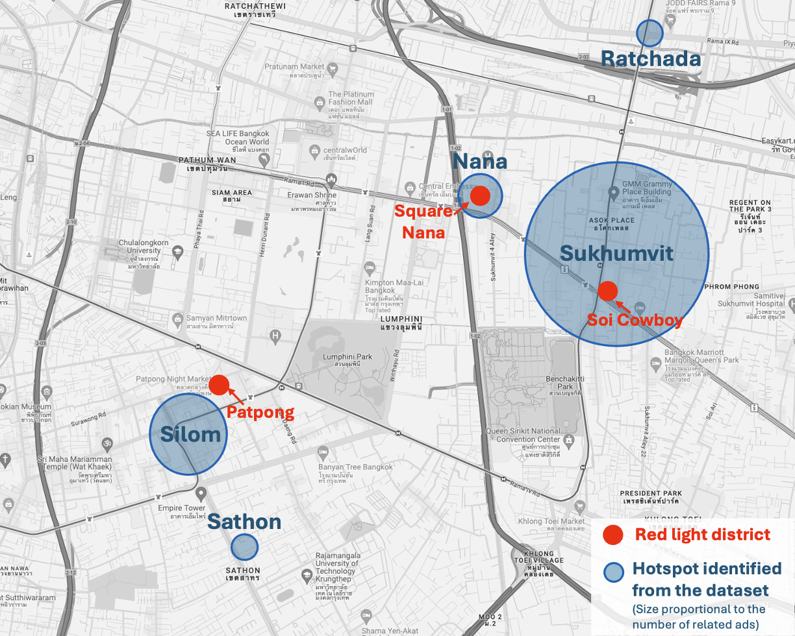
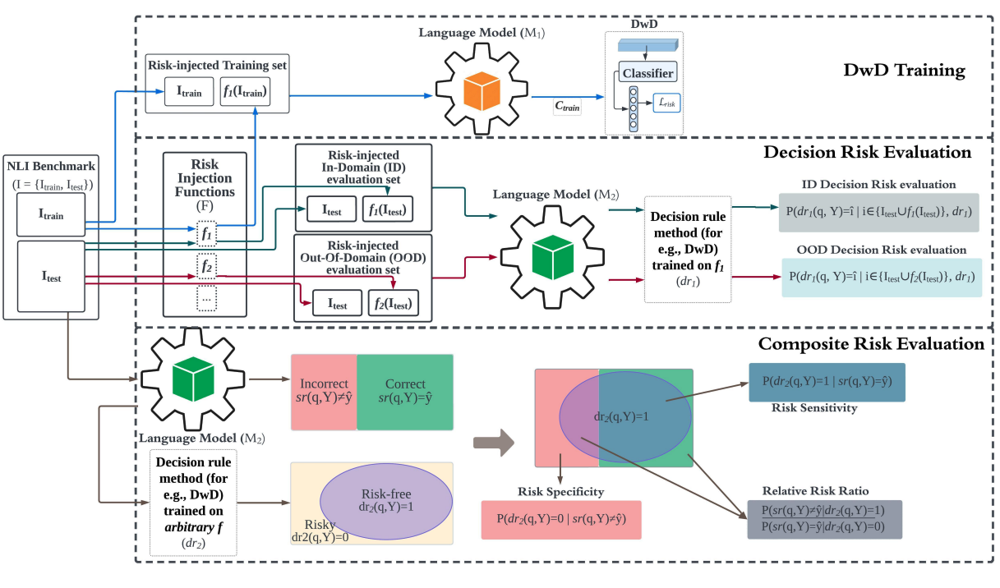
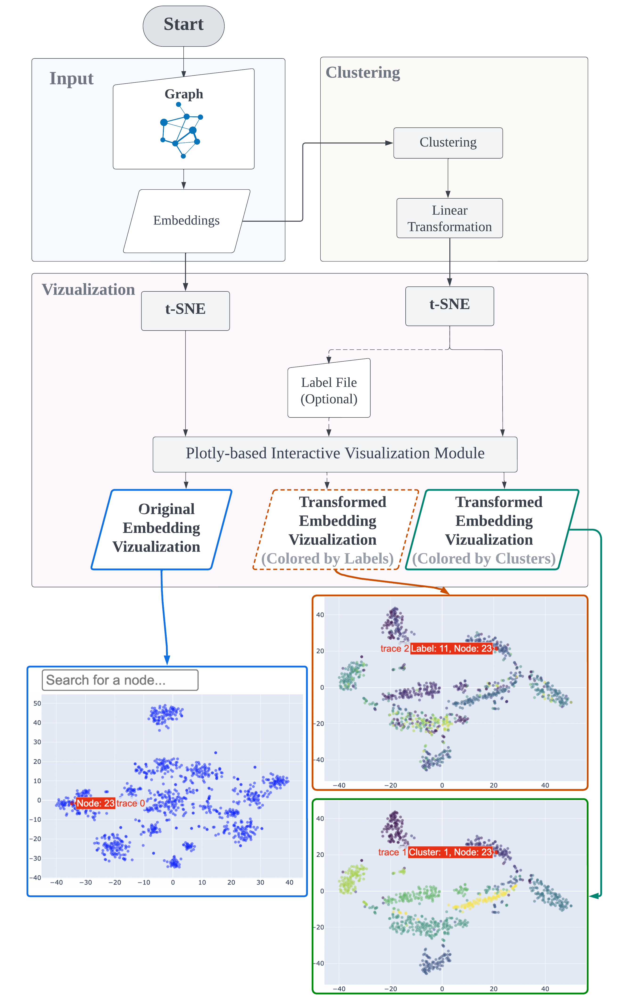
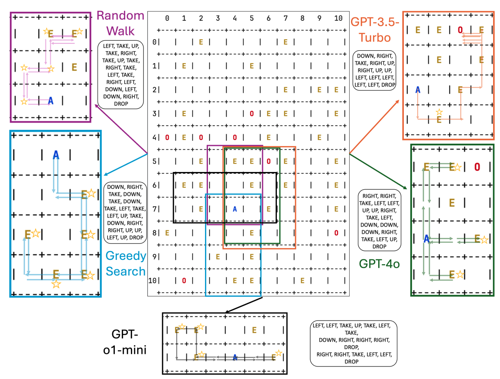
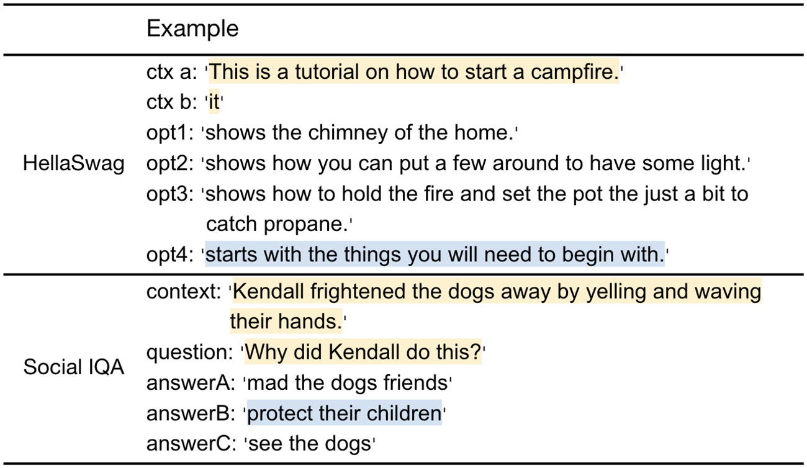
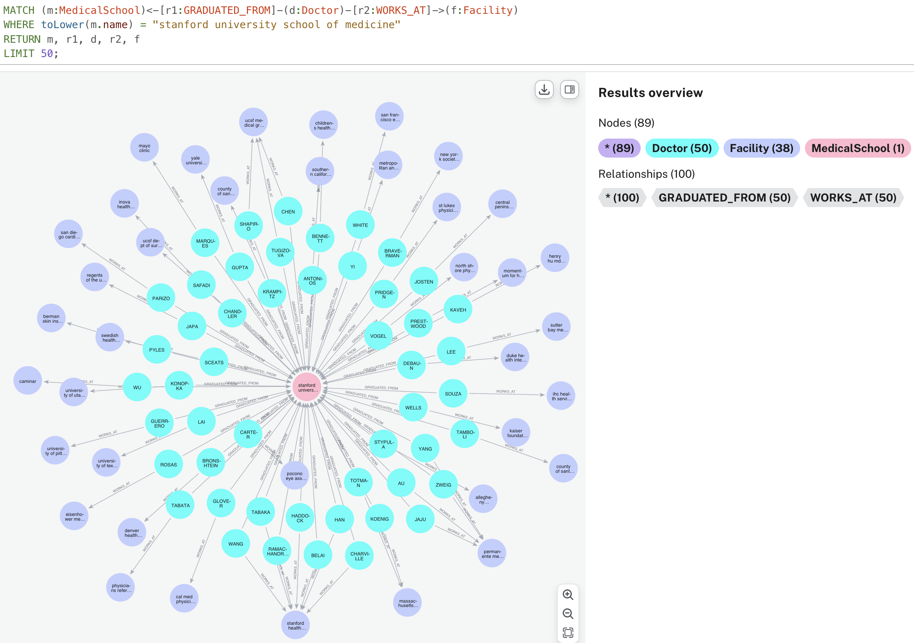
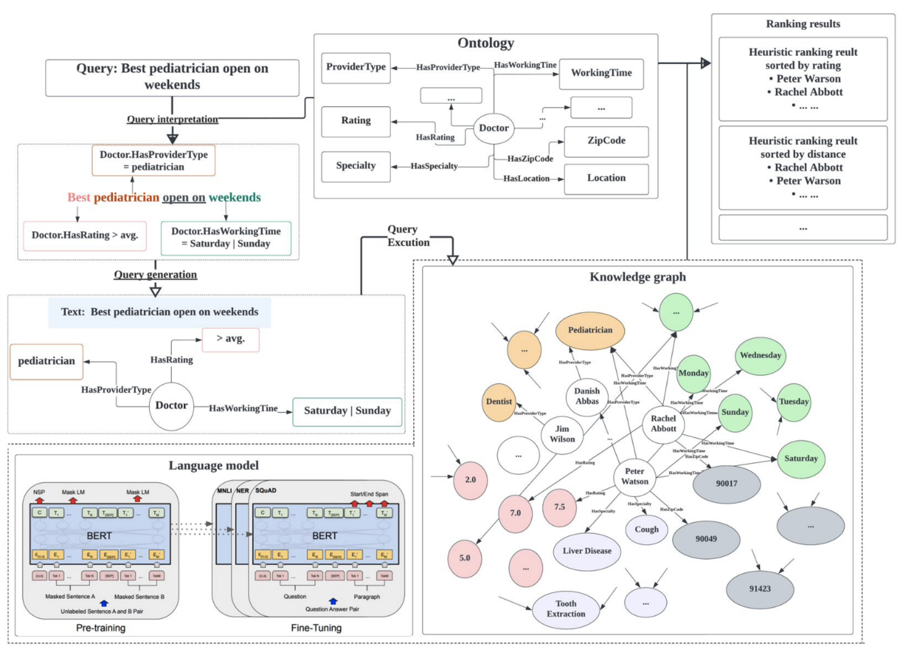
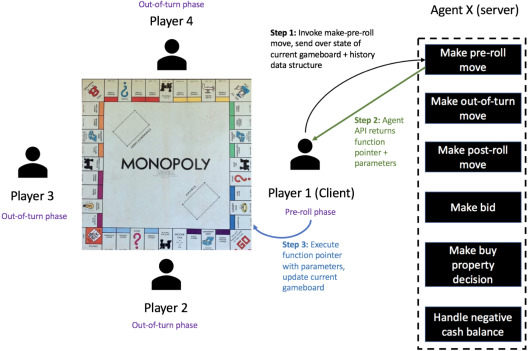

Building AI that reasons in the real world.
Active research programs across language models, knowledge graphs, network science, and AI for social good — at the intersection of rigor and impact.
AI & Complex Systems, interactive simulation — An encounter between artificial intelligence and a real-world complex system.
Active research

Studies in Global Human Trafficking
A nine-year program mapping and understanding human trafficking networks worldwide. We develop AI-driven tools to extract entities, relationships, and locations from noisy web data, building interpretable, entity-centric knowledge graphs. Drawing on network science, NLP, and computational social science, we examine how trafficking organizations form ties, coordinate activities, and adapt across geographies and online platforms.

Neurosymbolic Systems for Real-World Domains
Bridging large language models with knowledge-based systems for flexible, reliable analytics in healthcare, public policy, and e-commerce. We explore how LLMs can be combined with structured knowledge graphs in a neurosymbolic framework — building domain-specific systems that users can query in natural language with no coding or formal logic required.

Network Modeling of Complex Phenomena
The broad availability of datasets in social media, corporate filings, and transportation has enabled exciting convergence of network theory and computational social science. This portfolio ranges from understanding policy impacts during COVID-19 to quantifying gender bias in literature and examining the structure of political campaign finance in the U.S. House of Representatives.

LLMs & Cognitively Inspired Problem-Solving
We develop cognitively inspired benchmarks and methodologies to evaluate large language models on tasks involving decision-making, spatial navigation, estimative uncertainty, and commonsense behavior. Drawing from psychology and behavioral science, we focus on whether models exhibit human-like patterns in complex, real-world scenarios — moving beyond accuracy to assess how models act, not just what they predict.

Common Sense & Deep Cognition in Advanced AI
Toward reliable, knowledge-grounded reasoning in both LLMs and agent-based systems. We explore how advanced AI systems — large language models, RL agents, and hybrid neurosymbolic architectures — can be endowed with common sense and deep cognitive capabilities to reason effectively in open-ended, real-world environments such as medicine, law, and finance.

Knowledge Graphs in Public Health & Medicine
Rising health disparities are a defining social challenge. We build and apply knowledge graphs to deep questions in health and to power search systems like Kaiser Permanente's Finding Doctors and Locations engine. Current research extends to LLM-based chatbots that query these graphs naturally, plus work on network visualization.
Archived research

Domain-Specific Knowledge Graphs
Since the Google Knowledge Graph was publicized in 2011, KGs have become central to neurosymbolic AI — from search to recommendations. In this interdisciplinary effort we built algorithms, frameworks, and tools for semi-automatic construction from raw data, applied across e-commerce, healthcare, and human trafficking.

Open-World Learning
Funded by DARPA, we built OWL simulation environments based on games like Monopoly and Poker, and developed scientific approaches to better understanding structural violations of expectation in AI systems deployed in real-world environments.